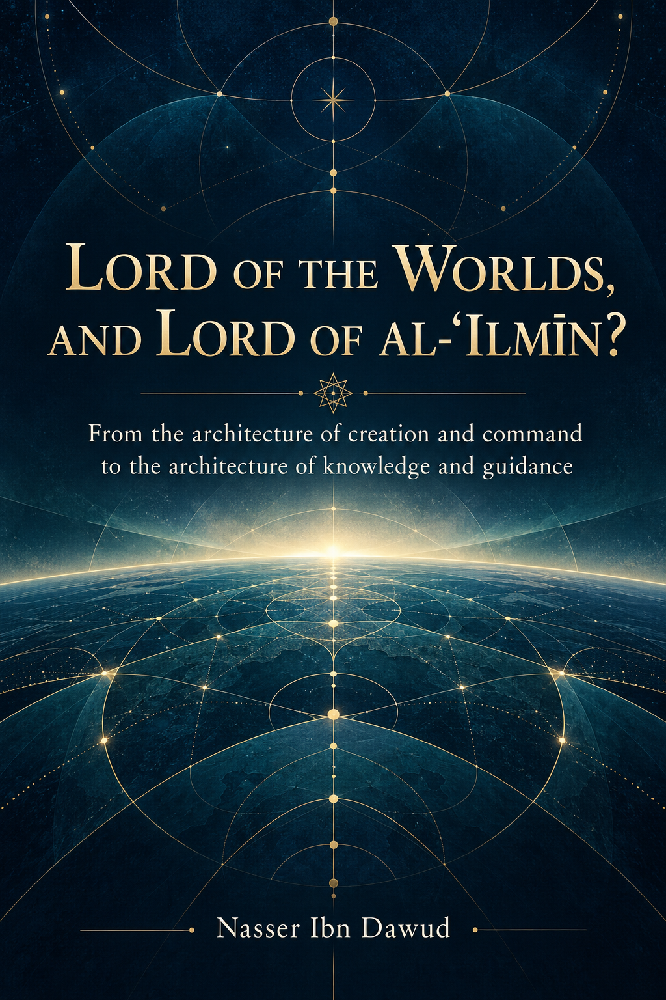

128. Lord of the Worlds, and Lord of “Al-ʿIlmīn”?

From creation and command to knowledge and guidance. “Rabb al-ʿIlmīn” is the author’s contemplative question, not an established Qur’anic reading.
Condensed conceptual English adaptation; the Arabic text remains the primary source for detailed analysis and references.
قراءة PDF داخل الموقع / Read the PDF on this website
جارٍ تجهيز القارئ… / Preparing the reader…
Book Summary, Table of Contents & Excerpt
LORD OF THE WORLDS, AND LORD OF “AL-ʿILMĪN”?
From the architecture of creation and command to the architecture of knowledge and guidance
Nasser Ibn Dawud
Condensed conceptual adaptation of the Arabic edition | 2026
I. The Global Knowledge Manifesto
Knowledge is a universal right. The author firmly believes that wisdom should not be locked behind paywalls or language barriers.
Global Access Policy: All books in this library are available for free in multiple digital formats (PDF, HTML, DOCX, TXT).
The Digital Library: As of early 2026, the collection hosts 236 volumes (118 in Arabic and 118 in English), fully optimized for AI-assisted research and digital archiving.
Official Platforms: Main Website: nasserhabitat.github.io/nasser-books/
GitHub: nasserhabitat/nasser-books
This manifesto is reproduced here as supplied by the author for this condensed edition.
II. Translator’s Note: The Bridge of Meaning
This English edition is a condensed conceptual adaptation. It is not a word-for-word translation, but rather an “extraction of essence.” It presents the core philosophical framework in accessible English, omitting the exhaustive linguistic debates and classical references found in the original Arabic text.
For the academic researcher: The original Arabic version remains the primary source for comprehensive linguistic analysis, detailed exegesis (Tafsir), and the complete bibliography.
This adaptation also preserves the methodological status of the Arabic edition. A claim marked OPEN remains open; a CANDIDATE remains a candidate; a RESISTED or STRONGLY RESISTED claim is not revived through simplification; and a CLOSED result remains closed only within its declared scope. The aim is clarity without scientific inflation.
Key Qur’anic terms are sometimes retained in transliteration—such as nafs, tawaffī, barzakh, and baʿth—when a single English equivalent would prematurely narrow the field under study.
How to Read This Adaptation
The book asks the reader to move from text to observation, from observation to inference, and from inference to a testable hypothesis. The sequence is: read in context; gather related passages; compare their functions; formulate a hypothesis; seek counter-evidence; record its status; and revise the conclusion when the evidence requires it.
The labels used here—observation, inference, candidate, open, resisted, and model—are research tools. They are not Qur’anic terms. A model may help a reader see a relation; it does not become a statement of revelation merely because it is useful.
The Arabic phrase Rabb al-ʿĀlamīn, “Lord of all worlds,” is the Qur’anic wording. “Rabb al-ʿIlmīn” in this title is an authorial contemplative expression that invites reflection on the root ʿ-l-m and on knowledge. It is not presented as a Qur’anic reading of al-Fātiḥah. The visual similarity of an undiacritized script does not establish a new reading. Recitation is grounded in transmitted readings; a reflective proposal remains a proposal.
The Central Question
What does the Qur’anic phrase Rabb al-ʿĀlamīn contribute to our understanding of divine lordship across creation, command, revelation, accountability, and final return? How do the Qur’an’s explicit statements about teaching, knowledge, and guidance relate to that lordship?
The book explores these questions without splitting divine lordship into separate names or domains. It studies a possible functional relationship between creating and teaching, while refusing to turn the relationship into a second reading of the Qur’an or a settled definition of every word.
PART I — THE COMPREHENSIVE SCOPE OF LORDSHIP
1. The Phrase in Praise, Prophetic Mission, and Submission
The opening of al-Fātiḥah praises God as Rabb al-ʿĀlamīn (Q 1:2). The phrase also appears in accounts of prophetic mission, in Abraham’s submission, in the confrontation between Moses and Pharaoh, and in passages about judgment and praise. These occurrences form a textual network; each passage must still be read in its own setting.
Noah and Hūd describe themselves as messengers from the Lord of all worlds (Q 7:61, 7:67). In al-Shuʿarāʾ, several messengers disclaim any payment for their mission from their people and identify their reward with God, the Lord of all worlds (Q 26:109, 127, 145, 164, 180). These passages support the observation that the mission is not presented as a service controlled by local power or purchased by the audience. They do not prove that every messenger used this exact phrase in every address.
Abraham says that he submits to the Lord of all worlds (Q 2:131), and a Qur’anic address tells its audience that it has been commanded to submit to the Lord of all worlds (Q 6:71). The broader declaration of worship and allegiance includes prayer, sacrifice, life, and death (Q 6:162). Together these passages invite a study of lordship as a comprehensive point of reference for human orientation. They do not establish that submission is mentioned only in connection with this phrase.
2. Pharaoh’s Question and Moses’ Reply
Pharaoh asks, “What is the Lord of all worlds?” (Q 26:23). Moses replies by naming the Lord of the heavens and earth and what lies between them (Q 26:24), the Lord of Pharaoh’s people and their forefathers (Q 26:26), and the Lord of the east, the west, and what lies between (Q 26:28). The answers move across cosmic scope, human history, and the world experienced by the audience.
This exchange can be read against Pharaoh’s claim to supreme lordship (Q 79:24). The contrast challenges political appropriation of sovereignty: a ruler does not become the ultimate source or owner of existence. The passage presents expansive relations of lordship; it does not specify one physical geometry of the cosmos or authorize a modern cosmological theory as its direct meaning.